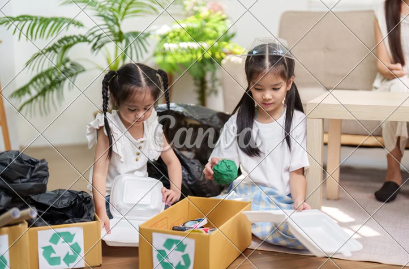
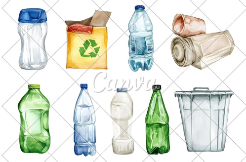
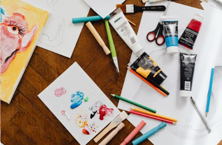

Nossos Projetos 🌱
Confira as iniciativas que estão mudando realidades e gerando novas oportunidades.
Mãos que Transformam
Oficinas de capacitação sustentável e incentivo ao empreendedorismo artesanal com materiais recicláveis.
O projeto "Capacitar para Florescer" foi lançado, oferecendo oficinas de capacitação sustentável focadas no empreendedorismo artesanal com materiais recicláveis. Em vez de descartar, os participantes aprenderam a transformar resíduos (plástico, papelão, embalagens) em produtos de valor, como luminárias e carteiras.
Verde nas Escolas
Programa educacional que promove hortas escolares e aulas sobre consumo consciente e preservação ambiental.
O projeto "Capacitar para Florescer" foi lançado, oferecendo oficinas de capacitação sustentável focadas no empreendedorismo artesanal com materiais recicláveis. Em vez de descartar, os participantes aprenderam a transformar resíduos (plástico, papelão, embalagens) em produtos de valor, como luminárias e carteiras.
Luz do Amanhecer
Reforço escolar e acompanhamento socioemocional para crianças em vulnerabilidade.
Muitos dos jovens, vindos de famílias que a ONG já apoiava com iniciativas ambientais, carregavam mochilas pesadas de preocupações, não apenas de livros. Notas baixas, ansiedade e dificuldade de concentração eram comuns.
Coleta Solidária
Parceria com cooperativas para coleta seletiva e reciclagem, fortalecendo a economia circular local.
O projeto "Elo Circular" da ONG "Raízes do Amanhecer" estabeleceu parceria com cooperativas de catadores para criar uma economia circular local através da capacitação em coleta seletiva e da valorização do trabalho dos cooperados. A iniciativa transformou o descarte linear em fonte de renda estável, fortalecendo a economia e a dignidade da comunidade ao reintegrar materiais ao sistema.